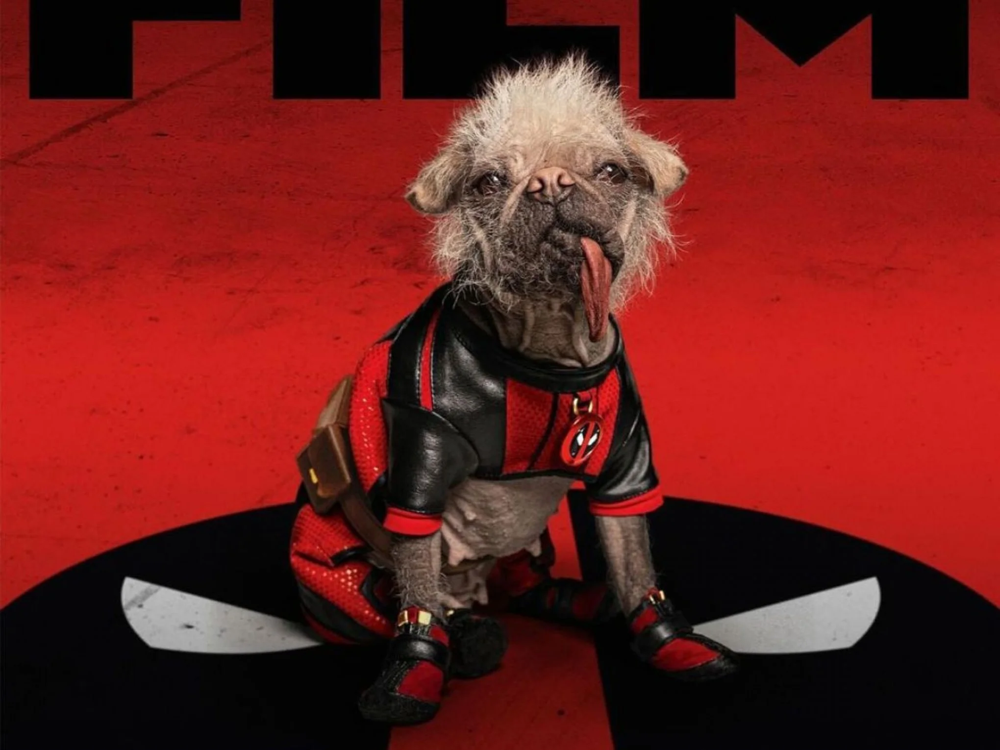
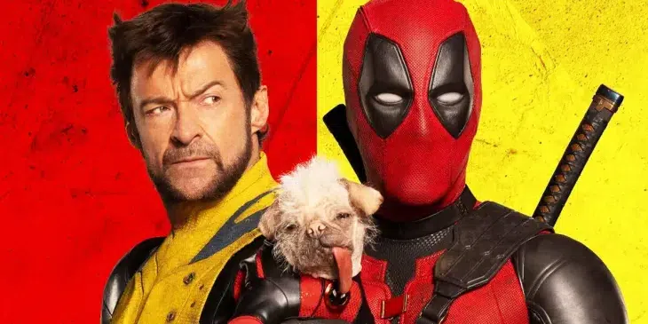

THE BEST HERO
"Au"tor de Cinema
Amigo de Deadpool e melhor amigo do homem
Sobre o Dogpool
Dogpool é uma versão canina do personagem Deadpool da Marvel, que apareceu em histórias cômicas de universos alternativos. Ele faz parte do grupo conhecido como "Deadpool Corps," uma equipe composta por diferentes versões de Deadpool de realidades alternativas.
O grupo inclui outros personagens como Lady Deadpool, Kidpool, Headpool (uma cabeça de Deadpool zumbificado) e, claro, Dogpool.
